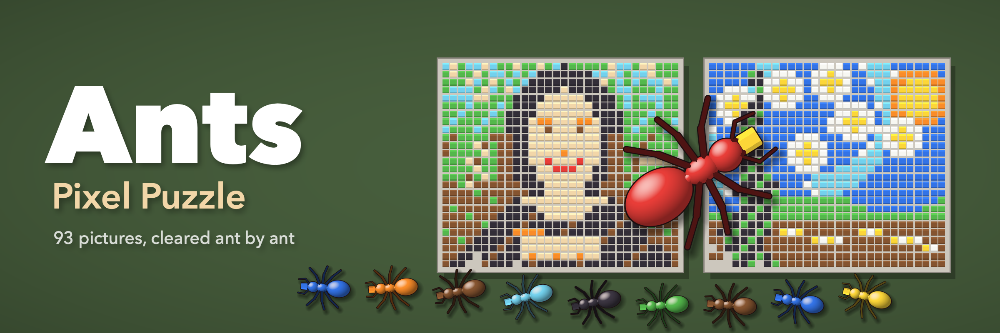
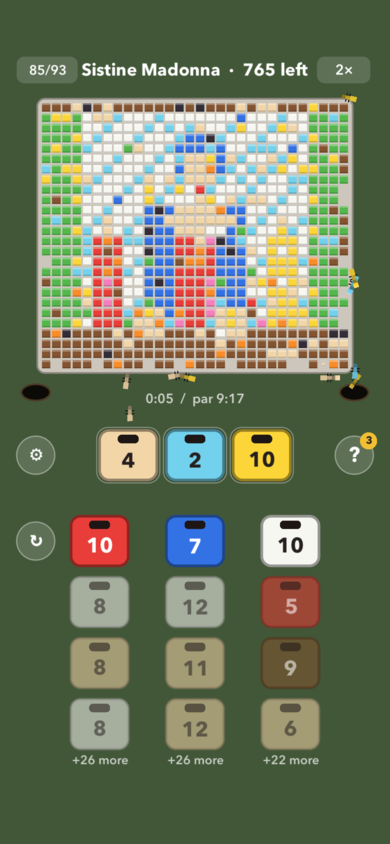

Ants: Pixel Puzzle

A picture made of colored cubes sits on a plate. Below it wait boxes of ants, stacked in columns. Tap a box to send it to a slot, and its ants march out, each one finding a cube of its own color, carrying it off, and diving into a hole. Clear every cube to finish the picture.
The catch: ants can only reach cubes that other ants have already uncovered. Send out a box whose color is still buried, and it sits in a slot waiting. Fill every slot that way and you're stuck. The order you tap is everything.

93 pictures
Start with simple pixel art like a mushroom, a heart and a rocket, then work up to hard pixel versions of famous paintings: The Starry Night, The Great Wave, the Mona Lisa, Girl with a Pearl Earring, The Kiss, Water Lilies, The Night Watch, Las Meninas, and dozens more.
Every level is solvable
Each level is dealt the same way every time and was checked by computer to make sure a winning order exists. If you get stuck, the hint button shows a box to tap next, three times a round.
Play your way
- Earn up to three stars by beating each picture's par time, or turn scoring off and just play
- Double the ants' speed when you know what you're doing
- Restart a round at any time
- Gentle sounds and haptics as the ants go home, each with its own switch
- Pick up where you left off, and replay any picture you've unlocked
No ads. No in-app purchases. No account.